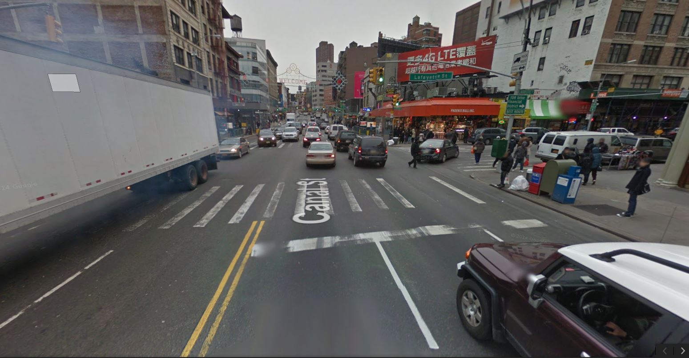
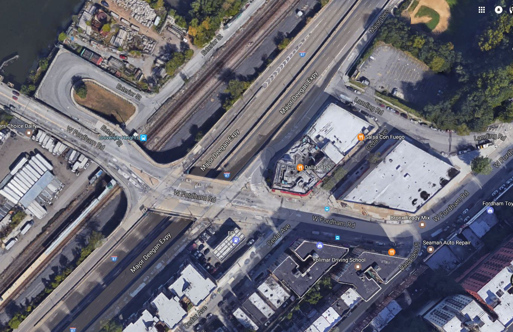
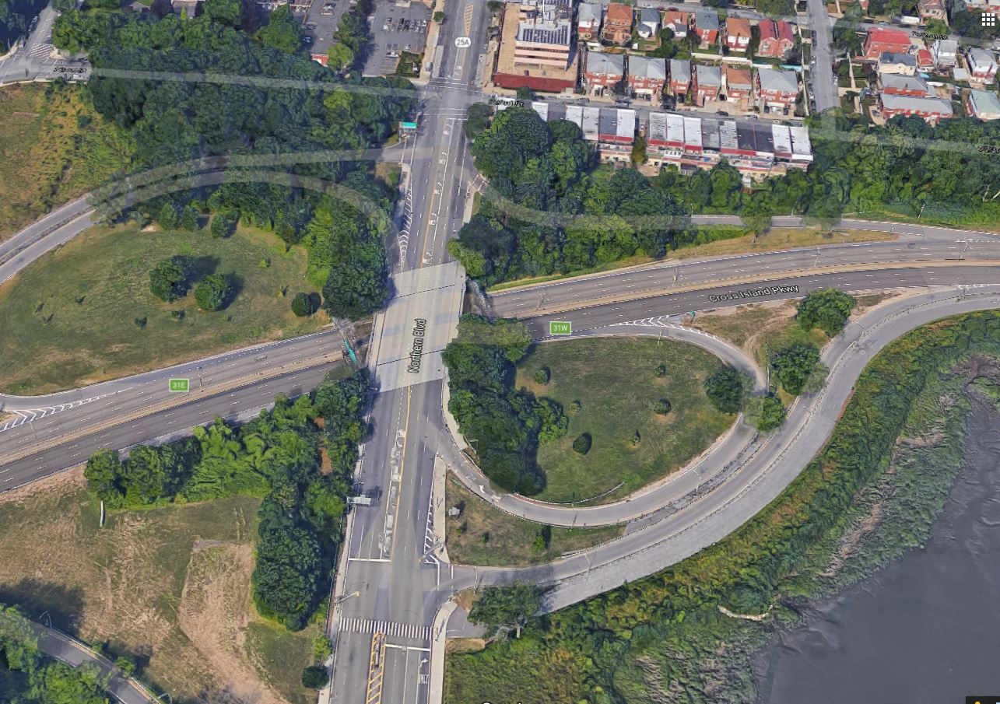

Major Intersections which have Higher Accident Rates
Intersections are another major accident prone area. Since there are multiple lanes and multiple major roads meeting at these points, they also tend to have
the highest amount of vehicles and traffic meeting and moving in these areas. Therefore they have a higher probability of an accident happening. This
can be correlated also with the Day Hour heatmap which we have made. During rush hours these intersections become jam packed and so have a higher potential
of accident happening.
Some of the accident prone intersections can be seen in the following pictures:



These 3 images show three intersections of Canal Street, Bronx and Queens respectively which are areas where accidents are highly common.
In the following plot, we show the different intersections which are common for having major accidents and at the same time show the rise and fall of accidents
in the intersections from 2012 to 2016. A point to note is that the intersection of the West 42 street with 8th Avenue which has the highest rate of accidents
in 2012 has slowly decreased over the years and in fact as of 2016 it seems to have reduced the number of accidents to a lower tier for a busy intersection. This
could be possible due to proper planning, more driving awareness or a better traffic infrastructure. This basically shows that with proper response vehicle accidents
can be reduced to a manageable level.